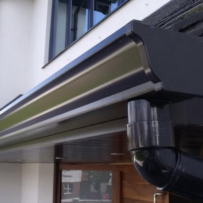

Gutterworx · West Yorkshire
Fascias & Soffits
Protect exposed roof edges and give your property a neater, lower-maintenance finish with properly fitted fascias and soffits.
The service
What to expect.
Fascias support the front edge of the roofline and provide the fixing surface for guttering. Soffits close the underside of the eaves. When either is damaged, poorly covered or deteriorating, water and pests can find routes into vulnerable areas.
Included in the conversation
- Replacement uPVC fascia boards
- Vented or appropriate soffit arrangements
- Bargeboards and roofline finishing
- Guttering and downpipes coordinated with the new fascia
- Rotten or damaged roofline assessed before covering
- Colour choices discussed during quotation

Questions
Fascias & Soffits FAQs.
Can you cap existing timber?
The right approach depends on the condition of the timber. We inspect it first and will not recommend covering material that needs to be removed or repaired.
Can fascia and soffit work be combined with seamless gutters?
Yes. Combining the work often creates the most consistent finish and ensures the new gutter has a sound fixing surface.
How do I get a price?
Use the quote form and include the property type, approximate roofline length and photos if available. We will then arrange the next step.